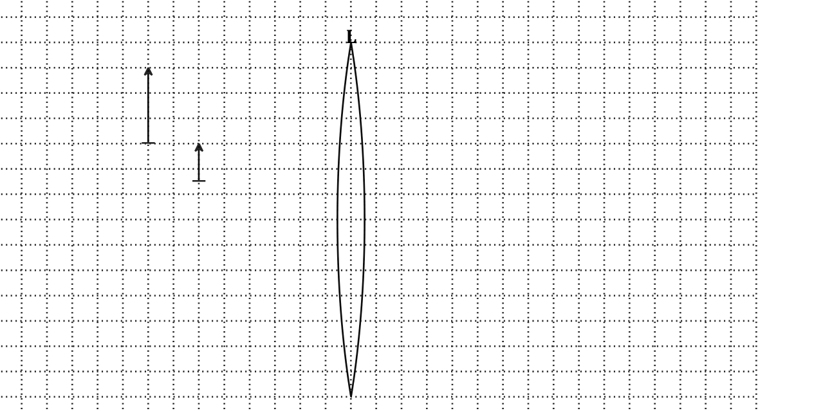
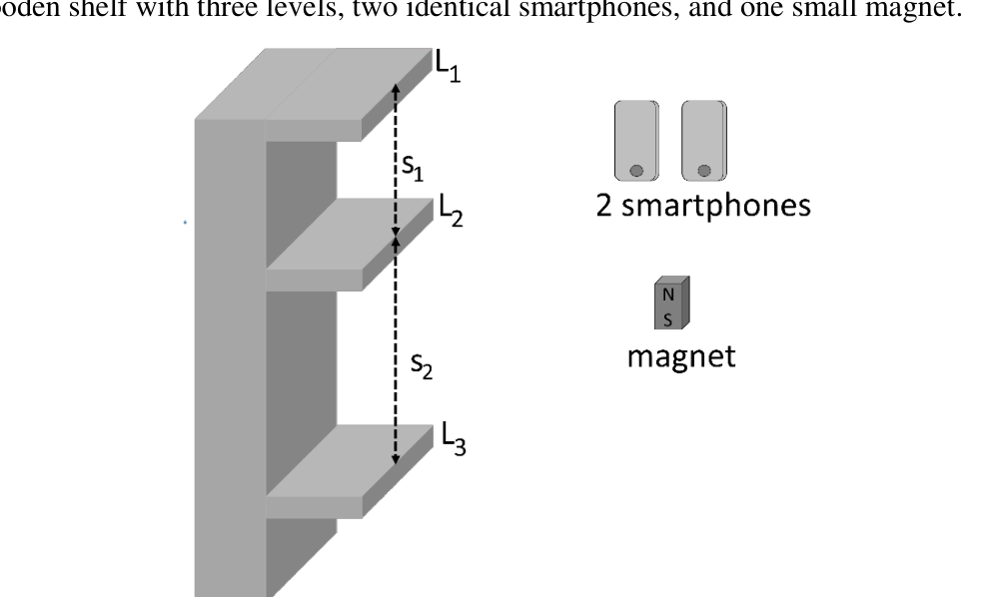
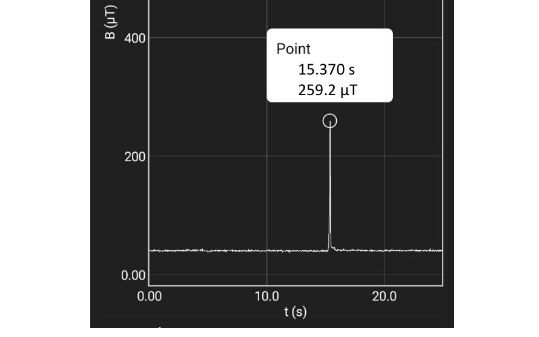
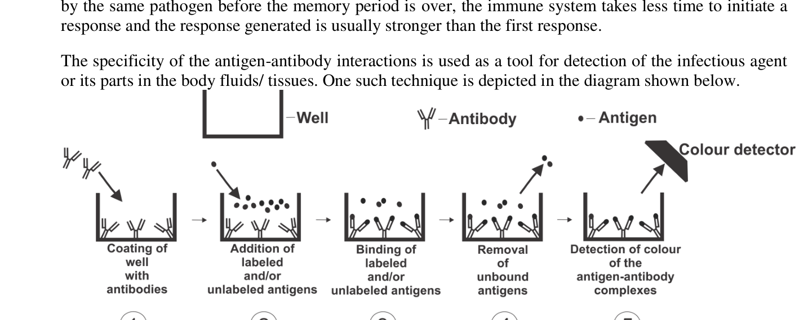
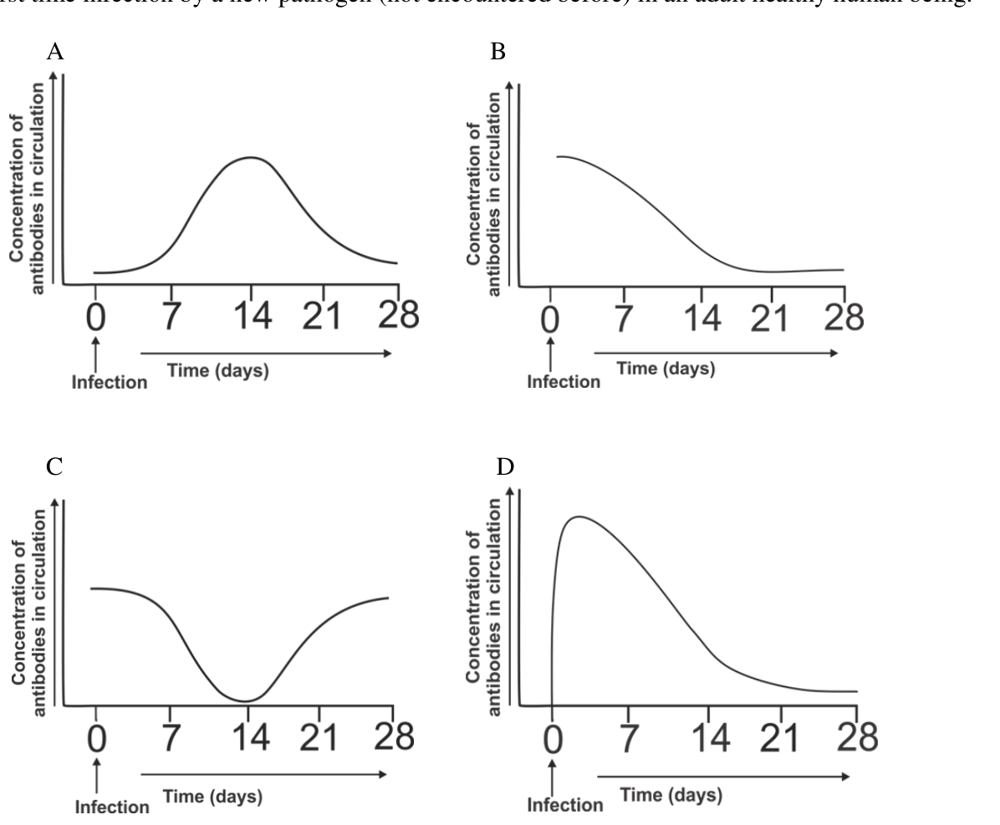
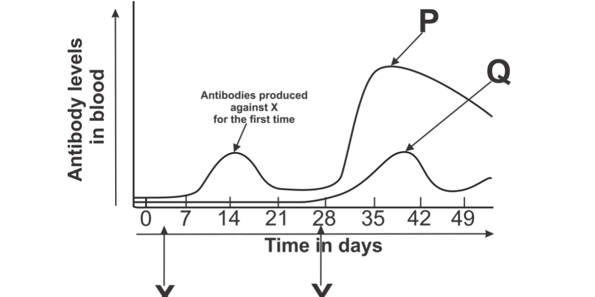
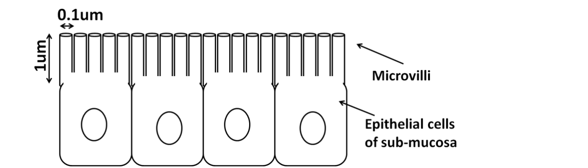

Neil Bartlett reacted molecular oxygen () with to get a compound . He repeated the experiment with xenon (Xe) in place of to get another substance which was found to be a mixture of compounds with two of them being and .
Based on the above information, the statement that is true is
- (a) second ionization potential of Xe is much lower than its first ionization potential.
- (b) first ionization potential of Xe is much lower than first ionization potential of .
- (c) Xe makes ionic bond with F in one of the above compounds.
- (d) Xe acts as reducing agent in above reactions.
Topic: Chemistry Metodi: Physical Modeling Competenze: Physical Reasoning Objects: — Fonte: Testo (PDF) — p.2 Soluzione: Soluzioni (PDF)
Neil Bartlett ha reagito all’ ossigeno molecolare () con per ottenere un composto . Ha ripetuto l’esperimento con il xenone (Xe) al posto di per ottenere un’altra sostanza che si è rilevata essere una miscela di composti con due di essi e .
Sulla base delle informazioni precedenti, la dichiarazione vera è
- a) il secondo potenziale di ionizzazione di Xe è molto inferiore al suo primo potenziale di ionizzazione.
- b) il primo potenziale di ionizzazione di Xe è molto inferiore al primo potenziale di ionizzazione di .
- (c) Xe produce legami ionici con F in uno dei composti di cui sopra.
- (d) Xe agisce come agente riduttore nelle reazioni di cui sopra.
Topic: Chemistry Metodi: Physical Modeling Competenze: Physical Reasoning Objects: — Fonte: Testo (PDF) — p.2 Soluzione: Soluzioni (PDF)
A student took a sandy soil sample from a desert area, put it in a bucket and poured tap water on it. After some time, the soil settled down in the bucket. She wanted to know if the sample had any soluble substances in it. Comparison of which of these properties between supernatant bucket water and the original tap water will most likely answer her question definitively.
- (a) pH
- (b) density
- (c) temperature
- (d) light scattering in identical containers
Topic: Chemistry, Earth & Environmental Science Metodi: Physical Modeling Competenze: Measurement & Instrumentation Objects: — Fonte: Testo (PDF) — p.2 Soluzione: Soluzioni (PDF)
Uno studente ha preso un campione di sabbia da una zona deserta, l’ha messo in un secchio e gli ha versato acqua dal rubinetto. Dopo un po’ di tempo, il terreno si stabilì nel secchio. Voleva sapere se il campione conteneva sostanze solubili. Il confronto di quale di queste proprietà tra l’acqua di scarico supernatante e l’acqua del rubinetto originale risponde probabilmente definitivamente alla sua domanda.
- (a) pH
- b) densità
- (c) temperatura
- d) dispersione della luce in contenitori identici
Topic: Chemistry, Earth & Environmental Science Metodi: Physical Modeling Competenze: Measurement & Instrumentation Objects: — Fonte: Testo (PDF) — p.2 Soluzione: Soluzioni (PDF)
When silver metal is heated, its electrical conductivity decreases. But the electrical conductivity of molten sodium chloride increases with temperature because—
- (a) specific heat of molten sodium chloride is higher than that of silver metal.
- (b) average speed of charge carriers increases in both cases.
- (c) at a given temperature, collisions decrease the average velocity of electrons much more than that of ions.
- (d) density of charge carriers in silver is less than that in sodium chloride.
Topic: Chemistry Metodi: Physical Modeling Competenze: Physical Reasoning Objects: — Fonte: Testo (PDF) — p.2 Soluzione: Soluzioni (PDF)
Quando il metallo argento viene riscaldato, la sua conducibilità elettrica diminuisce. Ma la conducibilità elettrica del cloruro di sodio fuso aumenta con la temperatura perché
- a) il calore specifico del cloruro di sodio fuso è superiore a quello del metallo argento.
- b) in entrambi i casi l’aumento della velocità media dei vettori di carica.
- c) ad una determinata temperatura, le collisioni diminuiscono la velocità media degli elettroni molto più di quella degli ioni.
- d) la densità dei vettori di carica nell’argento è inferiore a quella del cloruro di sodio.
Topic: Chemistry Metodi: Physical Modeling Competenze: Physical Reasoning Objects: — Fonte: Testo (PDF) — p.2 Soluzione: Soluzioni (PDF)
An industrial process uses NaCl, , , and as raw materials to obtain , using the following processes involving heat and catalysts
Of the following substances present in this system, those which can be heated together in another separate chamber to reduce consumption of primary raw material in this process are
- (a) ,
- (b) ,
- (c) , ,
- (d) ,
Topic: Chemistry Metodi: Physical Modeling Competenze: Physical Reasoning Objects: — Fonte: Testo (PDF) — p.2 Soluzione: Soluzioni (PDF)
Un processo industriale utilizza NaCl, , e come materie prime per ottenere , utilizzando i seguenti processi che coinvolgono calore e catalizzatori
Tra le seguenti sostanze presenti in questo sistema, quelle che possono essere riscaldate insieme in un’altra camera separata per ridurre il consumo di materie prime primarie in questo processo sono:
- (a) ,
- (b) ,
- (c) , ,
- (d) ,
Topic: Chemistry Metodi: Physical Modeling Competenze: Physical Reasoning Objects: — Fonte: Testo (PDF) — p.2 Soluzione: Soluzioni (PDF)
A thin aluminium foil is often placed on a bowl of food to keep the food warm. The foil does this by preventing heat flow through
- (a) radiation only
- (b) convection only
- (c) radiation and convection only
- (d) radiation, conduction, and convection
Topic: Thermodynamics Metodi: Physical Modeling Competenze: Physical Reasoning Objects: — Fonte: Testo (PDF) — p.2 Soluzione: Soluzioni (PDF)
Una sottile foglia di alluminio viene spesso collocata su una ciotola per mantenere il cibo caldo. La folia lo fa impedendo il flusso di calore attraverso
- a) solo radiazioni
- b) solo convezione
- c) solo per radiazioni e convezioni
- d) radiazioni, conduttività e convezione
Topic: Thermodynamics Metodi: Physical Modeling Competenze: Physical Reasoning Objects: — Fonte: Testo (PDF) — p.2 Soluzione: Soluzioni (PDF)
On a windy day, standing on your balcony, you hear the whistle of a stationary train at a distance. Which among the velocity and frequency of the sound is/are affected by the wind?
- (a) only velocity
- (b) only frequency
- (c) both velocity and frequency
- (d) neither velocity nor frequency
Topic: Oscillations & Waves Metodi: Physical Modeling Competenze: Physical Reasoning Objects: — Fonte: Testo (PDF) — p.2 Soluzione: Soluzioni (PDF)
In una giornata ventousa, mentre sei sul balcone, senti il fischio di un treno fermo a distanza. Quali delle velocità e delle frequenze del suono sono influenzate dal vento?
- a) solo velocità
- b) esclusivamente frequenza
- c) sia velocità che frequenza
- d) né velocità né frequenza
Topic: Oscillations & Waves Metodi: Physical Modeling Competenze: Physical Reasoning Objects: — Fonte: Testo (PDF) — p.2 Soluzione: Soluzioni (PDF)
Madhav assembled a toy cart with two wheels which were unequal in size. The left wheel was 4 cm in diameter and the right wheel was 3 cm in diameter. The wheels were connected to the opposite ends of an axle of length 10 cm. He set the cart in motion on the floor, pointing due north. Assume that the wheels roll without slipping. Approximately after how many rotations of the wheels will the cart be pointing due west?
- (a) 5
- (b) 10
- (c) 15
- (d) 20
Topic: Rotational Dynamics Metodi: Physical Modeling Competenze: Mathematical Modeling Objects: Cart, Wheel Fonte: Testo (PDF) — p.2 Soluzione: Soluzioni (PDF)
Madhav assemblò un carrello giocattoli con due ruote che erano ineguagliabili di dimensioni. La ruota sinistra aveva 4 cm di diametro e la ruota destra 3 cm di diametro. Le ruote erano collegate alle estremità opposte di un asse di lunghezza di 10 cm. Ha messo in moto il carro sul pavimento, puntando verso nord. Supponiamo che le ruote ruotino senza scivolare. Dopo circa quante rotazioni delle ruote il carro sarà orientato verso ovest?
- (a) 5
- (b) 10
- (c) 15
- (d) 20
Topic: Rotational Dynamics Metodi: Physical Modeling Competenze: Mathematical Modeling Objects: Cart, Wheel Fonte: Testo (PDF) — p.2 Soluzione: Soluzioni (PDF)
A wooden block is floating, partially submerged in a cup of water. If the setup is taken to the Moon and assuming the set-up is such that the water does not evaporate,
- (a) the block will still float but the water level in the cup will rise.
- (b) the block will still float but the water level in the cup will go down.
- (c) the block will still float with the water level in the cup remaining the same.
- (d) the block will sink and the water level in the cup will rise.
Topic: Fluid Mechanics Metodi: Hydrostatic Equilibrium Competenze: Physical Reasoning Objects: Block Fonte: Testo (PDF) — p.3 Soluzione: Soluzioni (PDF)
Un blocco di legno galleggia, in parte immerso in una tazza d’acqua. Se l’impianto viene portato sulla Luna e se si presume che l’impianto sia tale che l’acqua non evapori,
- (a) il blocco fluttuerà ancora ma il livello dell’acqua nella tazza aumenterà.
- b) il blocco fluttuerà ancora ma il livello dell’acqua nella tazza scenderà.
- c) il blocco fluttuerà ancora con il livello dell’acqua nella tazza rimanendo lo stesso.
- d) il blocco affonda e il livello dell’acqua nella tazza sale.
Topic: Fluid Mechanics Metodi: Hydrostatic Equilibrium Competenze: Physical Reasoning Objects: Block Fonte: Testo (PDF) — p.3 Soluzione: Soluzioni (PDF)
A mutation has been found in gene X of mice. The expression of this gene is testis specific. The mutation alters acrosome reaction (penetration of egg membrane by the sperm) during the process of fertilization. The sperms with the mutation in gene X are slower to penetrate the membrane as compared to normal healthy sperms. A heterozygous mouse carrying this mutation is allowed to mate with a normal healthy female. In spite of having this mutation, the mouse was able to produce the progeny from this cross. What will be the percentage of the progeny that will have this mutation?
- (a) All the progeny pups will have this mutation.
- (b) 50% of the pups will carry this mutation.
- (c) 25% of the pups will carry this mutation.
- (d) It is unlikely that the progeny pups will carry this mutation.
Topic: Biology Metodi: Physical Modeling Competenze: Physical Reasoning Objects: — Fonte: Testo (PDF) — p.3 Soluzione: Soluzioni (PDF)
Una mutazione è stata trovata nel gene X dei topi. L’espressione di questo gene è testico-specifica. La mutazione altera la reazione acrosomica (penetrazione della membrana dell’ovulo dallo sperma) durante il processo di fecondazione. Gli spermatozoi con mutazione del gene X penetrano più lentamente nella membrana rispetto ai normali spermatozoi sani. Un topo eterogeno che porta questa mutazione è consentito di accoppiarsi con una femmina normale e sana. Nonostante questa mutazione, il topo è stato in grado di produrre la progenie da questa croce. Qual sarà la percentuale della progenie che avrà questa mutazione?
- (a) Tutti i cuccioli della progenie avranno questa mutazione.
- b) il 50% dei cuccioli porterà questa mutazione.
- c) il 25% dei cuccioli porterà questa mutazione.
- (d) È improbabile che i cuccioli della progenie portino questa mutazione.
Topic: Biology Metodi: Physical Modeling Competenze: Physical Reasoning Objects: — Fonte: Testo (PDF) — p.3 Soluzione: Soluzioni (PDF)
The muscular endurance of an athlete is his/her ability to perform certain physical exercise for longer period of time without getting exhausted. To achieve this high muscular endurance, most of them follow ‘Carbo Loading’ practice. Generally, while preparing for certain event, they increase overall exercise and conduct rigorous workout for a week or two. Then, 3–4 days just before the actual event, they reduce the training and include complex carbohydrate rich food in their diet. How this can be helpful for their performance?
- (a) The diet helps in building extra muscle tissue needed for strength.
- (b) It increases the blood glucose level necessary for immediate raised performance.
- (c) Excessive glycogen can be synthesized, which can be stored and utilized during the event.
- (d) The complex carbohydrate gets stored into fats which can provide more ATPs for strenuous performance.
Topic: Biology Metodi: Physical Modeling Competenze: Physical Reasoning Objects: — Fonte: Testo (PDF) — p.3 Soluzione: Soluzioni (PDF)
La resistenza muscolare di un atleta è la sua capacità di eseguire un certo esercizio fisico per un periodo di tempo più lungo senza stancarsi. Per raggiungere questa elevata resistenza muscolare, la maggior parte di loro segue la pratica del “Carbo Loading”. Generalmente, mentre si preparano per un certo evento, aumentano l’esercizio generale e svolgono un allenamento rigoroso per una o due settimane. Quindi, 34 giorni prima dell’evento, riducono l’allenamento e includono nella dieta alimenti ricchi di carboidrati complessi. Come può questo essere utile per la loro performance?
- (a) La dieta aiuta a costruire tessuto muscolare extra necessario per la forza.
- (b) Aumenta il livello di glucosio nel sangue necessario per un aumento immediato delle prestazioni.
- (c) Si può sintetizzare un eccesso di glicogeno, che può essere conservato e utilizzato durante l’evento.
- (d) I carboidrati complessi vengono immagazzinati in grassi che possono fornire più ATP per prestazioni impegnative.
Topic: Biology Metodi: Physical Modeling Competenze: Physical Reasoning Objects: — Fonte: Testo (PDF) — p.3 Soluzione: Soluzioni (PDF)
The following observations were recorded after studying some organisms:
| Character | Organism W | Organism X | Organism Y | Organism Z |
|---|---|---|---|---|
| Water essential for fertilization | − | + | − | + |
| Formation of filament from germinating spore | − | − | − | + |
| Plant body sporophytic, differentiated in root, stem and leaves | + | + | + | − |
| Male and female sex organs arranged compactly in cone | + | + | − | − |
| Female gametophyte enveloped by single layered covering | + | − | − | − |
| Triploid tissue observed in zygote | − | − | + | − |
On the basis of the data, identify the group of organisms:
- (a) W– pteridophytes, X– bryophytes, Y– angiosperms, Z– gymnosperms
- (b) W– angiosperms, X– gymnosperms, Y– pteridophytes, Z– bryophytes
- (c) W– angiosperms, X– bryophytes, Y– gymnosperms, Z– pteridophytes
- (d) W– gymnosperms, X– pteridophytes, Y– angiosperms, Z– bryophytes
Topic: Biology Metodi: Physical Modeling Competenze: Physical Reasoning Objects: — Fonte: Testo (PDF) — p.3 Soluzione: Soluzioni (PDF)
Dopo aver studiato alcuni organismi sono state registrate le seguenti osservazioni:
➡️Caracter ➡️Organizzazione ➡️W ➡️Organizzazione X ➡️Organizzazione Y ➡️Organizzazione Z
| --- | :---: | :---: | :---: | :---: |
♬ Acqua essenziale per la fertilizzazione ♬ + ♬ + ♬
♬ Formazione di filamento da spore germinanti ♬ ♬ ♬ ♬ + ♬
♬ Plant body sporophytic, differenziato in radice, tronco e foglie ♬ ♬ ♬ ♬ ♬ ♬ ♬ ♬ ♬ ♬ ♬ ♬ ♬ ♬ ♬ ♬ ♬ ♬ ♬ ♬ ♬ ♬ ♬ ♬ ♬ ♬ ♬ ♬ ♬ ♬ ♬ ♬ ♬ ♬ ♬ ♬ ♬ ♬ ♬ ♬ ♬ ♬ ♬ ♬ ♬ ♬ ♬ ♬ ♬ ♬ ♬ ♬ ♬ ♬ ♬ ♬ ♬ ♬ ♬ ♬ ♬ ♬ ♬ ♬ ♬ ♬ ♬ ♬ ♬ ♬ ♬ ♬ ♬ ♬ ♬ ♬ ♬ ♬ ♬ ♬ ♬ ♬ ♬ ♬ ♬ ♬ ♬ ♬ ♬ ♬ ♬ ♬ ♬ ♬ ♬ ♬ ♬ ♬ ♬ ♬ ♬ ♬ ♬ ♬ ♬ ♬ ♬
♬ Organo sessuale maschile e femminile disposti in forma compatta ♬ + ♬ + ♬
♬ Gametofita femminile avvolta da un unico strato di copertura ♬ + ♬ ♬ ♬
tessuto triploide osservato nello zigoto
Sulla base dei dati, identificare il gruppo di organismi:
- a) Pteridofiti W, bryofiti X, angiospermi Y, gimnospermi Z
- b) angiospermi W, gimnospermi X, pteridofiti Y, bryophiti Z
- (c) angiospermi W, bryofiti X, gymnospermi Y, pteridofiti Z
- (d) W gimnospermi, X pteridofiti, Y angiospermi, Z bryophytes
Topic: Biology Metodi: Physical Modeling Competenze: Physical Reasoning Objects: — Fonte: Testo (PDF) — p.3 Soluzione: Soluzioni (PDF)
If the gamete of a tetraploid plant contains 26 chromosomes, the number of chromatids in cells of the plant during metaphase of mitosis and metaphase II of meiosis will be, respectively,
- (a) 104 and 104
- (b) 52 and 26
- (c) 104 and 52
- (d) 26 and 26
Topic: Biology Metodi: Physical Modeling Competenze: Physical Reasoning Objects: — Fonte: Testo (PDF) — p.3 Soluzione: Soluzioni (PDF)
Se il gameto di una pianta tetraploide contiene 26 cromosomi, il numero di cromatidi nelle cellule della pianta durante la metafase della mitosi e la metafase II della meiosi sarà rispettivamente:
- a) 104 e 104
- b) 52 e 26
- c) 104 e 52
- d) 26 e 26
Topic: Biology Metodi: Physical Modeling Competenze: Physical Reasoning Objects: — Fonte: Testo (PDF) — p.3 Soluzione: Soluzioni (PDF)
[10 Marks] Glycerol is formed in large quantities as the by-product in the soap making industry. Saponification reaction is the hydrolysis of fat and oils (triglycerides) with excess alkali resulting in two products: soap and glycerol. The common raw materials required for preparing soap are: oil/fat, caustic soda (NaOH solid), sodium chloride, and water.
13.1. In which order should these materials be mixed to obtain soap? Indicate the mixing order in 3 steps S1 – S3. [Note that mixing of caustic soda and water produces a lot of heat.]
13.2. Cooling the mixture is helpful after one of the mixing steps while heating the substance is helpful after another of the mixing steps. Identify the two steps (from S1–S3).
13.3. After soap is formed and separated, what components of the reaction mixture are left behind apart from glycerol?
13.4. Glycerol cannot be distilled at atmospheric pressure. It is removed from the reaction mixture by distillation under very low pressure. Based on this information, estimate the range in which boiling point of glycerol at atmospheric pressure is likely to lie. Given: Boiling point of Ethanol: .
- (a)
- (b)
- (c)
- (d) above
13.5. The glycerol obtained in this process is not pure. What is the predominant impurity in the distilled glycerol obtained?
13.6. During the saponification process three molecules of soap and one molecule of glycerol are formed by the reaction of one molecule of oil with alkali. When 5 g of an oil was completely saponified with 50.0 ml of 0.5 M NaOH solution, the resultant mixture was titrated with 0.5 M HCl and it required 14.0 ml of the acid to reach equivalent point. Calculate the amount of glycerol that can be obtained from 1 kg of this vegetable oil.
Glycerol may decompose to form acrolein at higher temperatures as shown below:
13.7. If under the soap making conditions described in 13.6, 1 out of 10 glycerol molecules formed decompose to acrolein, calculate the amount of glycerol that can be obtained per kg of oil.
Topic: Organic Chemistry, Chemistry Metodi: Physical Modeling Competenze: Physical Reasoning Objects: — Fonte: Testo (PDF) — p.4 Soluzione: Soluzioni (PDF)
[10 Marchi] Il glicerolo si forma in grandi quantità come sottoprodotto nell’industria del sapone. La reazione di saponizzazione è l’idrolizia di grassi e oli (trigliceridi) con eccesso di alcoli che si traduce in due prodotti: sapone e glicerolo. Le materie prime comuni necessarie per la preparazione del sapone sono: olio/grassi, soda caustica (solido NaOH), cloruro di sodio e acqua.
In quale ordine si deve mescolare questi materiali per ottenere il sapone? Indicare l’ordine di miscelazione in 3 passi S1 S3. [Nota che la miscelazione di soda e acqua caustica produce un sacco di calore.]
13.2. Il raffreddamento della miscela è utile dopo uno dei passaggi di miscelazione mentre il riscaldamento della sostanza è utile dopo un altro passaggio di miscelazione. Identificare i due passi (da S1S3).
Dopo la formazione e la separazione del sapone, quali componenti della miscela di reazione rimangono al di fuori del glicerolo?
**13.4. ** Il glicerolo non può essere distillato a pressione atmosferica. È rimosso dalla miscela di reazione mediante distillazione a pressione molto bassa. Sulla base di queste informazioni, si deve stimare il livello di ebollizione del glicerolo a pressione atmosferica. Data: punto di ebollizione dell’etanolo: .
- (a)
- (b)
- (c)
- (d) superiore a
Il glicerolo ottenuto in questo processo non è puro. Qual è l’impurità predominante del glicerolo distillato ottenuto?
Durante il processo di saponizzazione, tre molecole di sapone e una molecola di glicerolo si formano mediante la reazione di una molecola di olio con alcali. Quando 5 g di un olio sono stati completamente saponificati con 50,0 ml di soluzione di 0,5 M di NaOH, la miscela risultante è stata titrata con 0,5 M di HCl e occorre 14,0 ml di acido per raggiungere un punto equivalente. Calcolare la quantità di glicerolo che può essere ottenuta da 1 kg di questo olio vegetale.
Il glicerolo può decomporsi per formare acrolein a temperature più elevate come mostrato di seguito:
Se, nelle condizioni di produzione di sapone descritte al punto 13.6, 1 molecola di glicerolo su 10 si decompone in acrolein, calcolare la quantità di glicerolo che può essere ottenuta per kg di olio.
Topic: Organic Chemistry, Chemistry Metodi: Physical Modeling Competenze: Physical Reasoning Objects: — Fonte: Testo (PDF) — p.4 Soluzione: Soluzioni (PDF)
[12 Marks] Most fires require three components to sustain the combustion:
i. fuel ii. oxygen iii. heat to initiate and sustain the combustion.
To control unwanted/accidental fires, various methods are used to extinguish fire depending on the nature of the material(s) being burnt.
Consider different kind of fires being fuelled by the following materials:
- I. paper stacks
- II. stack of clothes
- III. vegetable oil spill
- IV. petrol in drums
- V. Electrical wiring with plastic insulation
Different kind of fire-fighting strategies are effective for different fires. Here we look at four common strategies.
First strategy is of spraying water over the fire.
14.1. Spraying water cannot extinguish fires due to petrol. Which property of water and petrol prevents water from extinguishing petrol fire?
14.2. Among the fires sustained by materials I – V, which can be extinguished by spraying water?
14.3. (a) Which of the three components of fire (i – iii) is/are reduced immediately by water spraying?
(b) The property/ies of water responsible for the role mentioned in 14.3 (a) is/are (identify the correct option(s)):
- (a) high latent heat of vapourization
- (b) high specific heat
- (c) low thermal conductivity
- (d) high electrical conductivity
- (e) its property to dissolve carbon dioxide
Another fire-fighting strategy involves use of -based extinguishers. A soda acid fire extinguisher was first patented in 1866 by Francois Carlier and then modified in 1881 in the U.S. by Almon M Granger. The extinguisher contains a solution of sodium bicarbonate () with sulphuric acid contained in a sealed vial (labelled Ac in diagram). When the nozzle is pressed, the seal is broken and acid falls into sodium bicarbonate solution. As a result carbon dioxide and carbonic acid water is sprayed on the fire.
\begin{document}
\begin{tikzpicture}[scale=1]
% extinguisher body
\draw[thick] (0,0) -- (0,3) -- (2,3) -- (2,0) -- cycle;
% nozzle
\draw[thick] (0.7,3) -- (0.7,3.5) -- (1.3,3.5) -- (1.3,3);
% liquid
\draw[fill=gray!20] (0,0) rectangle (2,2);
\node at (1,1) {$\text{NaHCO}_3$(aq.)};
% acid vial
\draw[thick,fill=gray!40] (0.7,2.2) rectangle (1.3,2.9);
\node at (1,2.55) {Ac};
\end{tikzpicture}
\end{document}14.4. Which of the three components of fire (i – iii) does soda acid suppresses in fire?
14.5. Should a soda acid extinguisher be used to reduce petrol fires and/or fires in electrical wiring? Give reason for your answer.
Another version of based extinguisher was developed in 1920s contains only compressed , which is released at high pressure by pressing a nozzle.
14.6. Can a extinguisher be used to reduce petrol fires and/or electrical fires?
A third type of fire extinguisher is used specifically for vegetable oil fires. These fire extinguishers spray a fine spray of alkaline potassium carbonate or potassium acetate on burning oil. This fine spray causes formation of foam on the oil surfaces.
14.7. (a) In this case, which of the three components of fire (i – iii) get reduced? Write one sentence for each of the component(s) explaining reduction mechanism(s).
(b) Which of the other kind of fires (I, II, IV, V) can be extinguished using this extinguisher?
Topic: Chemistry, Thermodynamics Metodi: Physical Modeling Competenze: Physical Reasoning Objects: — Fonte: Testo (PDF) — p.4 Soluzione: Soluzioni (PDF)
La maggior parte degli incendi richiede tre componenti per sostenere la combustione:
i. combustibile ii. ossigeno iii. calore per avviare e sostenere la combustione.
Per controllare gli incendi non voluti o accidentali, si utilizzano vari metodi per spegnere l’incendio a seconda della natura del materiale che viene bruciato.
Considerate diversi tipi di incendi alimentati dai seguenti materiali:
- I. pilastri di carta
- II. un sacco di vestiti
- III. scarico di olio vegetale
- IV. benzina in tamburi
- V. Cable elettrici con isolamento di plastica
Diversi tipi di strategie di lotta contro gli incendi sono efficaci per diversi incendi. Qui analizziamo quattro strategie comuni.
La prima strategia è quella di spruzzare l’acqua sul fuoco.
**14.1. ** L’acqua di spruzzatura non può spegnere gli incendi a causa della benzina. Quale proprietà dell’acqua e della benzina impedisce all’acqua di spegnere il fuoco di benzina?
Tra gli incendi sostenuti da materiali I V, che possono essere estinti spruzzando acqua?
14.3. (a) Quale dei tre componenti del fuoco (i iii) viene/sono ridotto immediatamente mediante spruzzatura d’acqua?
b) La proprietà/i dell’acqua responsabile del ruolo di cui al punto 14.3 (a) è (indicate la corretta opzione)
- a) elevato calore latente di evaporazione
- b) calore specifico elevato
- c) bassa conducibilità termica
- d) elevata conduttività elettrica
- e) la sua proprietà di dissolvere anidride carbonica
Un’altra strategia di lotta contro gli incendi prevede l’uso di estintori basati su . Un estintore a acido di soda fu brevettato per la prima volta nel 1866 da Francois Carlier e poi modificato nel 1881 negli Stati Uniti. - di Almon M. Granger. L’ estintore contiene una soluzione di bicarbonato di sodio () con acido solforico contenuto in un flaconcino sigillato (tipo Ac nel diagramma). Quando si premono le bozzelle, il sigillo si rompe e l’acido cade in una soluzione di bicarbonato di sodio. Di conseguenza, si spruzzano sul fuoco anidride carbonica e acqua di acido carbonico.
\begin{document}
\begin{tikzpicture}[scale=1]
% extinguisher body
\draw[thick] (0,0) -- (0,3) -- (2,3) -- (2,0) -- cycle;
% nozzle
\draw[thick] (0.7,3) -- (0.7,3.5) -- (1.3,3.5) -- (1.3,3);
% liquid
\draw[fill=gray!20] (0,0) rectangle (2,2);
\node at (1,1) {$\text{NaHCO}_3$(aq.)};
% acid vial
\draw[thick,fill=gray!40] (0.7,2.2) rectangle (1.3,2.9);
\node at (1,2.55) {Ac};
\end{tikzpicture}
\end{document}Qual è il componente di fuoco (i) che l’acido di soda sopprime nel fuoco?
14.5. È opportuno utilizzare uno sticcatore a acido di soda per ridurre gli incendi a benzina e/o gli incendi nel cablaggio elettrico? Datemi ragione per la vostra risposta.
Un’altra versione di estintore basato su è stata sviluppata negli anni ‘20 e contiene solo compresso, che viene rilasciato a alta pressione premendo un fumo.
14.6. Può essere utilizzato uno sticcatore per ridurre gli incendi a benzina e/o elettrici?
Un terzo tipo di estintore viene utilizzato specificamente per incendi con olio vegetale. Questi estintori di fuoco spruzzano un sottile spray di carbonato di potassio alcalino o acetato di potassio sull’olio che brucia. Questo sciacquato finissimo provoca la formazione di schiuma sulle superfici dell’olio.
**14.7. ** (a) In questo caso, quali dei tre componenti del fuoco (i iii) vengono ridotti? Scrivere una frase per ciascun componente che spiega il meccanismo di riduzione.
b) Quali altri tipi di incendi (I, II, IV, V) possono essere estinti con questo estintore?
Topic: Chemistry, Thermodynamics Metodi: Physical Modeling Competenze: Physical Reasoning Objects: — Fonte: Testo (PDF) — p.4 Soluzione: Soluzioni (PDF)
[10 marks] The figure below shows a partial drawing of an optical system. The system consists of an object, a real image of that object (both shown by the pair of arrows), a thin converging lens L, and a plane mirror placed to the right of the lens (not shown in the drawing). It is not explicit that which arrow represents the object. All elements are parallel to each other. Consider the centre of the lens to be at (0 cm, 0 cm). Assume each small box on the dotted grid is in size.
Quesito 15

(a) Draw a ray diagram showing all the elements (including the mirror) of the optical system so that the given object-image pair is produced. You are not allowed to change the size or position of any of the elements shown. Also state the values of the focal length of the lens , and the location of the mirror (both in centimeters).
(b) With the given object/image pair, are there any other values of and possible? Justify your answer.
Topic: Geometric Optics Metodi: Thin Lens & Mirror Equation, Ray Tracing Competenze: Diagrammatic Reasoning Objects: Lens, Mirror Fonte: Testo (PDF) — p.6 Soluzione: Soluzioni (PDF)
[10 punti] La figura seguente mostra un disegno parziale di un sistema ottico. Il sistema consiste in un oggetto, un’immagine reale di quell’oggetto (entrambi mostrati dalla coppia di frecce), una lente sottile convergente L e uno specchio piano posizionato a destra della lente (non mostrato nel disegno). Non è esplicito quale freccia rappresenti l’oggetto. Tutti gli elementi sono paralleli l’uno all’altro. Considera che il centro della lente sia a (0 cm, 0 cm). Supponiamo che ogni piccola casella della griglia puntata abbia una dimensione .
Quesito 15
a) Disegnare un diagramma di raggi che mostra tutti gli elementi (compreso lo specchio) del sistema ottico in modo da produrre la coppia di immagini di oggetto data. Non è consentito modificare la dimensione o la posizione di nessuno degli elementi indicati. Indicare anche i valori della distanza focale della lente e la posizione dello specchio (entrambi in centimetri).
b) Con la coppia oggetto/immagine data, sono possibili altri valori di e ? giustifica la tua risposta.
Topic: Geometric Optics Metodi: Thin Lens & Mirror Equation, Ray Tracing Competenze: Diagrammatic Reasoning Objects: Lens, Mirror Fonte: Testo (PDF) — p.6 Soluzione: Soluzioni (PDF)
[10 marks] Padma wants to devise an experiment to determine the acceleration due to gravity, . All she had is a wooden shelf with three levels, two identical smartphones, and one small magnet.
Quesito 16

She knows the distances and between the levels (, , ) of the shelf. She came to know that smartphones have a magnetometer sensor and there are apps which use it and display the magnetic field nearby. She experimented with an app and noticed that when a magnet passes within the close vicinity of the phone, the magnetometer in the phone shows the change in magnetic field graphically (as seen at sec in graph below).
Quesito 16

Clocks in the two phones are not synchronized but the time in the app is measured from the time the sensor is activated by pressing a switch in the app. She found that she can manually start the apps in the two phones simultaneously by pressing the start buttons in each together. However, synchronization of dropping the magnet and starting the app is very difficult, and introduces a large error in the measurement. The formula for change of magnetic field with distance is not known to her.
Describe the experiment that she should perform to determine as accurately as possible. You must clearly describe the setup and the procedure of measurement, as well as derive the formula for determination of from the measured quantities. Also, list the possible sources of errors.
Topic: Newtonian Mechanics Metodi: Kinematic Equations, Experimental Data Analysis Competenze: Experimental Data Analysis Objects: Magnet Fonte: Testo (PDF) — p.6 Soluzione: Soluzioni (PDF)
Padma vuole ideare un esperimento per determinare l’accelerazione dovuta alla gravità, . Tutto quello che aveva era uno scaffale di legno con tre livelli, due smartphone identici e un piccolo magnete.
Quesito 16
Conosce le distanze e tra i livelli (, , ) dello scaffale. Ha scoperto che gli smartphone hanno un sensore magnetometrico e ci sono app che lo usano e visualizzano il campo magnetico nelle vicinanze. Ha sperimentato un’app e ha notato che quando un magnete passa nelle vicinanze del telefono, il magnetometro del telefono mostra il cambiamento del campo magnetico in modo grafico (come visto a sec nel grafico di seguito).
Quesito 16
Gli orologi nei due telefoni non sono sincronizzati ma il tempo nell’app viene misurato dal momento in cui il sensore è attivato premendo un interruttore nell’app. Ha scoperto che può avviare manualmente le app nei due telefoni simultaneamente premendo i pulsanti di avvio in ciascuno insieme. Tuttavia, la sincronizzazione del lancio del magnete e l’avvio dell’app è molto difficile e introduce un grande errore nella misurazione. La formula per la variazione del campo magnetico con la distanza non è conosciuta.
Descrivere l’esperimento che deve eseguire per determinare il con la massima precisione possibile. È necessario descrivere chiaramente la configurazione e la procedura di misurazione e derivare dalla quantità misurata la formula per la determinazione di . Inoltre, elencate le possibili fonti di errori.
Topic: Newtonian Mechanics Metodi: Kinematic Equations, Experimental Data Analysis Competenze: Experimental Data Analysis Objects: Magnet Fonte: Testo (PDF) — p.6 Soluzione: Soluzioni (PDF)
[9 marks] When an infectious agent enters the body of a person, the cells of the immune system recognize it as a foreign object and initiate immune reaction against it. The antigen-antibody reaction is one of the many mechanisms of action of our immune system to fight infection. In this, the immune system starts to form more of the cells that produce antibodies specific to the newly encountered antigen. These cells then multiply to produce large quantities of the required antibody. In a few days’ time, these antibodies start eliminating the infectious agent from the body and continue to do so till the number of infectious agent becomes almost zero.
When a person is infected by any pathogen for the first time, the immune system develops antibodies and keeps the memory for variable durations depending upon the pathogen. When there are subsequent attacks by the same pathogen before the memory period is over, the immune system takes less time to initiate a response and the response generated is usually stronger than the first response.
The specificity of the antigen-antibody interactions is used as a tool for detection of the infectious agent or its parts in the body fluids/ tissues. One such technique is depicted in the diagram shown below.
Quesito 17

The system is developed in such a way that if the antigens are labeled, when they bind to the antibodies, they form complexes that are coloured and can be detected. The process of labeling involves chemically attaching a coloured molecule to the antigen. If the antigens are not labeled, then the complex remains colourless.
17.1. Suppose that this test is used for detection of a virus from circulating blood. The labeled antigens have the same capacity as that of the actual antigen to bind to the antibodies. The serum from an infected and a non-infected person are added as shown in the table below.
| Well | Components added after antibody coating |
|---|---|
| 1. Control | Labeled antigens only |
| 2. X | Labeled antigens + serum of an infected person |
| 3. Y | Labeled antigens + serum of a non-infected person |
After allowing the antigens to bind with the antibodies, the supernatant containing unbound antigens is removed and intensity of the colour of the antigen-antibody complexes, if there are any, is detected and quantified. Based on this experimental set up, which of the following statements is CORRECT?
- (a) Intensity of the colour detected from X is less than that from the control well.
- (b) Intensity of the colour detected from X is more than that from the control well.
- (c) Intensity of the colour detected from X less than that from the control; but is more than that from Y.
- (d) Intensities of the colours detected from X and Y are equal to each other as well as with that from the control.
17.2. Considering the facts regarding entry of pathogen and production of antibodies, choose the correct option that depicts the response of the immune system in form of antibody production following the first time infection by a new pathogen (not encountered before) in an adult healthy human being.
Quesito 17

17.3. Vaccine-mediated immune protection depends on antigen-antibody reactions. Most of the traditional vaccines are killed/ weakened or inactivated pathogens, which are unable to cause the disease by themselves, but are able to trigger antibody production.
Quesito 17

Considering these facts and the graph shown above, identify possibilities for labels X, Y, P and Q from the list given below.
- i. Entry of new pathogen into the body
- ii. Second/repeat encounter of a pathogen
- iii. Vaccine administration
- iv. Administration of booster dose of vaccine
- v. Antibody levels upon entry of a new pathogen
- vi. Antibody levels upon second/repeated entry of a pathogen
- vii. Antibody levels upon administration of any vaccine
- viii. Antibody levels upon administration of booster dose of the same vaccine
- ix. Antibody levels upon administration of vaccine developed against a different pathogen
Topic: Biology Metodi: Physical Modeling Competenze: Physical Reasoning Objects: — Fonte: Testo (PDF) — p.7 Soluzione: Soluzioni (PDF)
Quando un agente infettivo entra nel corpo di una persona, le cellule del sistema immunitario lo riconoscono come un oggetto estraneo e iniziano una reazione immunitaria contro di esso. La reazione antigenico-anticorpo è uno dei molti meccanismi di azione del nostro sistema immunitario per combattere le infezioni. In questo, il sistema immunitario inizia a formare più cellule che producono anticorpi specifici dell’antigene appena trovato. Queste cellule si moltiplicano per produrre grandi quantità di anticorpi. In pochi giorni questi anticorpi iniziano a eliminare l’agente infettivo dal corpo e continuano a farlo fino a quando il numero di agenti infettivi diventa quasi zero.
Quando una persona è infetta da un patogeno per la prima volta, il sistema immunitario sviluppa anticorpi e conserva la memoria per durate variabili a seconda dell’agente patogeno. Quando ci sono successivi attacchi dello stesso patogeno prima che il periodo di memoria sia finito, il sistema immunitario richiede meno tempo per iniziare una risposta e la risposta generata è di solito più forte della prima risposta.
La specificità delle interazioni antigen- anticorpo è utilizzata come strumento per rilevare l’ agente infettivo o le sue parti nei fluidi/ tessuti corporei. Una di queste tecniche è illustrata nel diagramma che segue.
Quesito 17
Il sistema è sviluppato in modo tale che se gli antigeni sono etichettati, quando si legano agli anticorpi, formano complessi colorati e rilevabili. Il processo di etichettatura prevede l’attaccamento chimico di una molecola colorata all’antigene. Se gli antigeni non sono etichettati, il complesso rimane incolore.
** 17.1.** Supponiamo che questo test sia usato per rilevare un virus dal sangue circolante. Gli antigeni etichettati hanno la stessa capacità di legare agli anticorpi come l’antigene effettivo. Il siero di una persona infetta e di una persona non infetta viene aggiunto come mostrato nella tabella seguente.
Bene, i componenti sono stati aggiunti dopo il rivestimento degli anticorpi | --- | --- | | 1. ♬ Controlla solo gli antigeni etichettati ♬ | 2. X Antigeni etichettati + siero di una persona infetta | 3. ♬ Antigeni etichettati + siero di una persona non infetta ♬
Dopo aver permesso agli antigeni di legarsi agli anticorpi, viene rimosso il supernatante contenente antigeni non legati e viene rilevata e quantificata l’intensità del colore dei complessi antigeni-anticorpi, se ne esistono. Sulla base di questa struttura sperimentale, quale delle seguenti affermazioni è corretta?
- (a) L’intensità del colore rilevato da X è inferiore a quella del pozzo di controllo.
- (b) L’intensità del colore rilevato da X è superiore a quella del pozzo di controllo.
- (c) L’intensità del colore rilevato da X è inferiore a quella del controllo, ma è superiore a quella del Y.
- d) Le intensità dei colori rilevati da X e Y sono uguali tra loro e a quelle del controllo.
17.2. Considerando i fatti relativi all’ ingresso di un patogeno e alla produzione di anticorpi, scegliere la corretta opzione che descriva la risposta del sistema immunitario sotto forma di produzione di anticorpi dopo la prima infezione da un nuovo patogeno (non incontrato prima) in un essere umano adulto sano.
Quesito 17
La protezione immunitaria mediata dai vaccini dipende dalle reazioni antigen- anticorpi. La maggior parte dei vaccini tradizionali sono patogeni uccisi/ indeboliti o inattivati, che non sono in grado di causare la malattia da soli, ma sono in grado di innescare la produzione di anticorpi.
Quesito 17
Considerando questi fatti e il grafico sopra indicato, si possono individuare le possibilità per le etichette X, Y, P e Q nell’elenco di seguito riportato.
- i. Entrata nel corpo di un nuovo patogeno
- ii. Seconda/ripresa di un patogeno
- III. Adesione al vaccino
- iv. Amministrazione di dose di booster del vaccino
- v. Livelli di anticorpi all’ingresso di un nuovo patogeno
- vi. Livelli di anticorpi al momento della seconda/ripetita introduzione di un patogeno
- Vivi. Livelli di anticorpi durante l’ somministrazione di qualsiasi vaccino
- E’ il terzo. Livelli di anticorpi dopo somministrazione di dose di rinforzo dello stesso vaccino
- ix. Livelli di anticorpi dopo l’ somministrazione di vaccini sviluppati contro un altro patogeno
Topic: Biology Metodi: Physical Modeling Competenze: Physical Reasoning Objects: — Fonte: Testo (PDF) — p.7 Soluzione: Soluzioni (PDF)
[3 marks] There are about microvilli per square centimeter of sub mucosa in gastrointestinal track of humans. Each microvillus— a rod like structure present on epithelial cell of sub mucosa— is in length and in diameter.
Quesito 18

In a particular genetic condition associated with intractable diarrhea, the average length of the microvillus is found to be reduced by 66% (though the cross section remains almost the same).
Assume that absorption is happening predominantly on the microvilli surfaces. Calculate, in terms of percentage, how much would be the loss in total surface area available for absorption in small intestine in that genetic condition. Note that answers without calculations/explanation will not be considered.
Topic: Biology Metodi: Physical Modeling Competenze: Estimation & Approximation Objects: — Fonte: Testo (PDF) — p.9 Soluzione: Soluzioni (PDF)
[3 punti] Ci sono circa microvilli per centimetro quadrato di sub- mucosa nella traccia gastrointestinale degli esseri umani. Ogni microvillus struttura simile a una canna presente sulla cellula epiteliale della submucosa è di lunghezza e di diametro.
Quesito 18
In una particolare condizione genetica associata alla diarrea intractabile, si constata una riduzione del 66% della lunghezza media del microvilo (anche se la sezione trasversale rimane quasi la stessa).
Supponiamo che l’assorbimento si verifichi prevalentemente sulle superfici dei microvilli. Calcolare, in termini di percentuale, quanto sarebbe la perdita di superficie totale disponibile per l’assorbimento nell’intestino tenue in tale condizione genetica. Si noti che le risposte senza calcoli/esplicazioni non saranno prese in considerazione.
Topic: Biology Metodi: Physical Modeling Competenze: Estimation & Approximation Objects: — Fonte: Testo (PDF) — p.9 Soluzione: Soluzioni (PDF)
[10 marks] Four farms from similar geographic location, A, B, C and D of equal size are divided into 7 lanes spatially – 1, 2, 3, 4, 5, 6 and 7. The table represents plantation strategy of farmer for the four farms in five consecutive years.
| Farm name | Plantation | 2015 | 2016 | 2017 | 2018 | 2019 |
|---|---|---|---|---|---|---|
| A | Wheat | 1,2,3,4,5,6,7 | 1,2,3,4,5,6,7 | 1,2,3,4,5,6,7 | ||
| A | Soybean | 1,2,3,4,5,6,7 | 1,2,3,4,5,6,7 | |||
| A | Rice | 1,2,3,4,5,6,7 | ||||
| B | Wheat | 1,3,5,7 | 2,4,6 | 1,3,5,7 | 2,4,6 | 1,3,5,7 |
| B | Soybean | 2,4,6 | 1,3,5,7 | 2,4,6 | 1,3,5,7 | 2,4,6 |
| B | Rice | 0 | 0 | 0 | 0 | 0 |
| C | Maize | 2,4,6 | 2,4,6 | 2,4,6 | 2,4,6 | 2,4,6 |
| C | Pea plant | 3,5 | 3,5 | 3,5 | 3,5 | 3,5 |
| C | Trap plant/grass | 1,7 | 1,7 | 1,7 | 1,7 | 1,7 |
| D | Maize | 3,5,6,7 | 3,5,6,7 | 3,5,6,7 | 3,5,6,7 | 3,5,6,7 |
| D | Wheat | 2,4 | 2,4 | 2,4 | 2,4 | 2,4 |
| D | Trap plant/grass | 1 | 1 | 1 | 1 | 1 |
19.1. For items (a – e), write appropriate answer(s) in the answer sheet, based on the above table.
(a) Intercropping is practiced in farm/s ________ in the year(s) _________ .
(b) Crop rotation is practiced in the farm/s __________ .
(c) Rice / Maize / Wheat / Pea plant / Trap grass may replace Soybean in Farm B, without affecting yield / acre or plantation strategy to a great extent. (Identify the correct option(s)).
(d) The farm that is likely to provide least yield/hector to the farmer in the year 2019 is __________ .
(e) One of the efficient farming strategies termed ‘push pull technology’ involves planting insect attractant forage grass trap or ‘pull’-plant at the border of field, and insect repellent leguminous ‘push’ plant in between the main crop. The farm/s using this strategy is / are ______________ .
19.2. State true or false.
i. Chemical and visual cues given by plant will be important while choosing it as a trap crop. ii. Monoculture of maize in a farm would be more susceptible to any new pest infestation over farm/s A, B and C. iii. Mixed cropping / intercropping would discourage growth of natural enemies of insect pests compared to monocropping. iv. Pest infested cereal crop can be rescued by using push and pull technology.
Topic: Biology, Earth & Environmental Science Metodi: Physical Modeling Competenze: Physical Reasoning Objects: — Fonte: Testo (PDF) — p.9 Soluzione: Soluzioni (PDF)
[10 punti] Quattro aziende agricole di posizione geografica simile, A, B, C e D, di dimensioni uguali sono spazialmente suddivise in 7 corsie 1, 2, 3, 4, 5, 6 e 7. Il tabella rappresenta la strategia di piantagione dell’agricoltore per le quattro aziende agricole in cinque anni consecutivi.
♬ Nome della fattoria ♬ Piantagione 2015 ♬ 2016 ♬ 2017 ♬ 2018 ♬ 2019 ♬ | --- | --- | --- | --- | --- | --- | --- |
# Un # # un # # un # # un # un # un # un # un # un # un # un # un # un # un # un # un # un # un # un # un # un # un # un # un # un # un # un # un # un # un # un # un # un # un # un # un # un # un # un # un # un # un # un # un # un # un # un # un # un # un # un # un # un # un # un # un # un # un # un # un # un # un # un # un # un # un # un # un # un # un # un # un # un # un # un # un # un # un # un # un # un # un # un # un # un # un # un # un # un # un # un # un # un # un # un # un # un # un # un # un # un # un # un # un # un # un # un # un # un # un # un # un # un # un # un # un # un # un # un # un # un # un # un # un # un # un # un # un # un # un # un # un # un # un # un # un # un # un # un # un # un # un # un # un # un # un # un # un # un # un # un # un # un # un # un # un # un # un # un # un # un # un # un # un # un # un # un # un # un # un # un # un # un # un # un # # un # # # un # un # un # # un # # un # un # # # # un # # # # # # # # # # # # # # # # # # # # # # # # # # # # # # # # # # # # # # # # # # # # # # # # # # # # # # # # # # # # # # # # # # # # # # # # # # # # # # # # # # # # # # # # # # # # # # # # # # # # # # # # # # # # # # # # # # # # # # # # # # # # # # # # # # # #
# Un soia # # 1, 2, 3, 4, 5, 6, 7 # 1, 2, 3, 4, 5, 6, 7
# Un po’ di riso # # 1, 2, 3, 4, 5, 6, 7
B # Wheat # 1,3,5,7 # 2,4,6 # 1,3,5,7 # 2,4,6 # 1,3,5,7
B # Soybean # 2,4,6 # 1,3,5,7 # 2,4,6 # 1,3,5,7 # 2,4,6 # 2,4,6 # 2,4,6 # 2,4,6 # 2,4,6 # 2,4,6 # 2,4,6 # 2,4,6 # 2,4,6 # 2,4,6 # 2,4,6 # 2,4,6 # 2,4,6 # 2,4,6 # 2,4,6 # 2,4,6 # 2,4,6 # 2,4,6 # 2,4,6 # 2,4,6 # 2,4,6 # 2,4,6 # 2,4,6 # 2,4,6 # 2,4,6 # 2,4,6 # 2,4,6 # 2,4,6 # 2,4,6 # 2,4,6 # 5,6 # 2,4,6 # 2,4,6 # 2,4,6 # 5,6 # 5,6 # 5,6 # 2,4,6 # 7,7 # # 2,4,6 # 2,4,6 # 7, # 7,6 # 7,6 # # # # # # # # # # 7,7 # # # # # # # # # # # # # # # # # # # # # # # # # # # # # # # # # # # # # # # # # # # # # # # # # # # # # # # # # # # # # # # # # # # # # # # # # # # # # # # # # # # # # # # # # # # # # # # # # # # # # # # # # # # # # # # # # # # # # # # # # # # # # # # # # # # # # # # # # # # # # # # # # # # # # # # # # # # # # # # # # # # # # # # # # # # # # # # # # # # # # # # # # # # # # # # # # # # # # # # # # # # # # # # # # # # # # # # # # # # # # # # # # # # # # # # # # # # # # # # # # # # # # # # # # # # # # # # # # # # # # # # # # # # # # # # # # # # # # # # # # # # # # # # # # # # # # # # # # # # # # # # # # #
B # Rice # 0 # 0 # # # Risa
➡️C ➡️Mais 2,4,6 ➡️ 2,4,6 ➡️ 2,4,6 ➡️ 2,4,6 ➡️ 2,4,6 ➡️ 2,4,6 ➡️ 2,4,6 ➡️ 2,4,6 ➡️ ♬ C ♬ Pianta di Pina ♬ 3,5 ♬ 3,5 ♬ 3,5 ♬ 3,5 ♬ 3,5 ♬ C Pianta di trappola / erba 1.7 1.7 1.7 1.7 1.7 ♬ D ♬ Mais ♬ 3,56,7 ♬ 3,56,7 ♬ 3,55,6,7 ♬ 3,56,7 ♬ 3,56,7 ♬ 3,56,7 ♬ 3,5,6,7 ♬
D ̊ Grano ̊ 2,4 ̊ 2,4 ̊ 2,4 ̊ 2,4 ̊ 2,4 ̊ 2,4 ̊
♬ D ♬ Trap Plant / grass ♬ 1 ♬ 1 ♬ 1 ♬ 1 ♬ 1 ♬
19.1. Per le voci (a e), scrivere le risposte appropriate nella scheda delle risposte, sulla base della tabella di cui sopra.
(a) L’ intercoltivazione si pratica in azienda agricola nel corso dell’ anno (s) _________ .
b) La rotazione delle colture è praticata nell’ azienda agricola (s) __________ .
(c) Ris / mais / grano / pianta di pisello / erba intrappolata può sostituire la soia nella fattoria B, senza influire in gran parte sulla resa / acri o sulla strategia di piantagione. (Identificare la corretta opzione (s)).
d) L’azienda agricola che potrebbe fornire al contadino il minimo rendimento/ettaro nell’anno 2019 è __________ .
e) Una delle strategie agricole efficaci denominate “tecnologia push pull” consiste nel piantare tra le colture principali piante di “pull” o “trap” che attirano insetti e che repellono gli insetti. L’ azienda agricola che utilizza questa strategia è o sono ______________ .
19.2. Indicare la verità o la falsità.
i. I segnali chimici e visivi forniti dalla pianta saranno importanti per la scelta di una pianta. ii. La monocoltura di mais in una fattoria sarebbe più suscettibile a qualsiasi nuova infestazione da parassiti rispetto alle fattorie A, B e C. iii. La coltivazione miscela / intercoltivazione scoraggerebbe la crescita di nemici naturali degli insetti infestanti rispetto alla monocoltivazione. iv. Le colture di cereali infestate da pesti possono essere salvate utilizzando la tecnologia di spinta e pull.
Topic: Biology, Earth & Environmental Science Metodi: Physical Modeling Competenze: Physical Reasoning Objects: — Fonte: Testo (PDF) — p.9 Soluzione: Soluzioni (PDF)